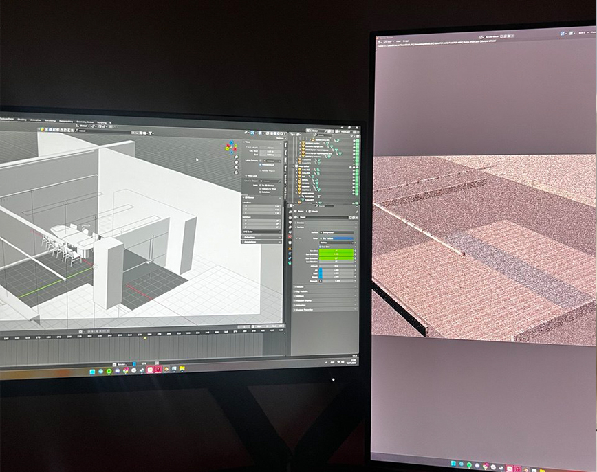
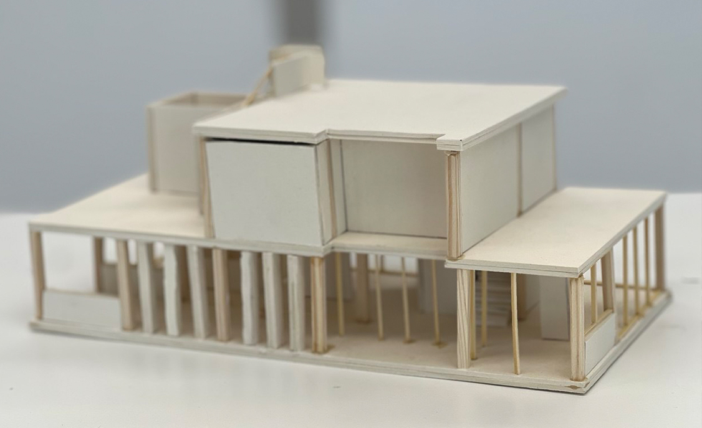
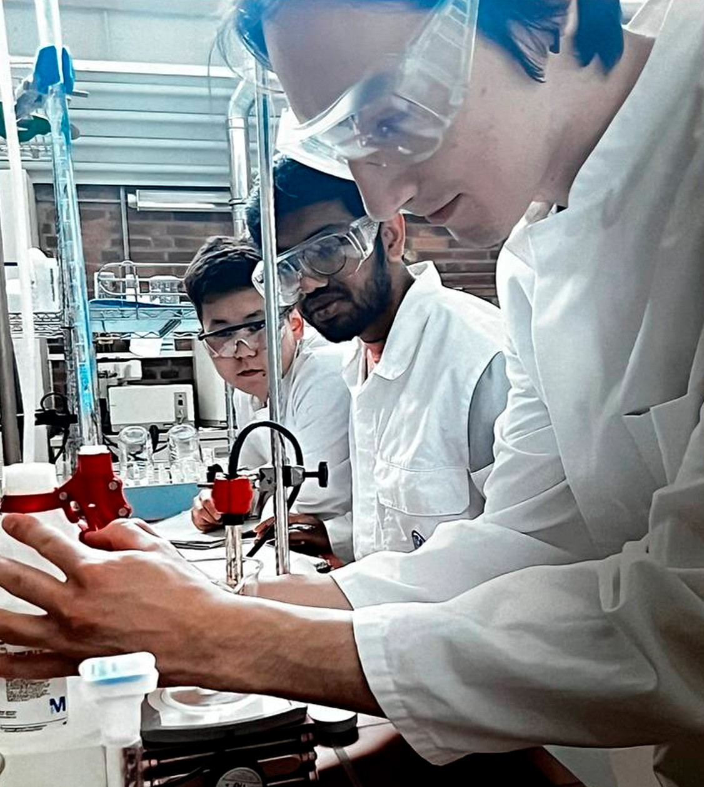
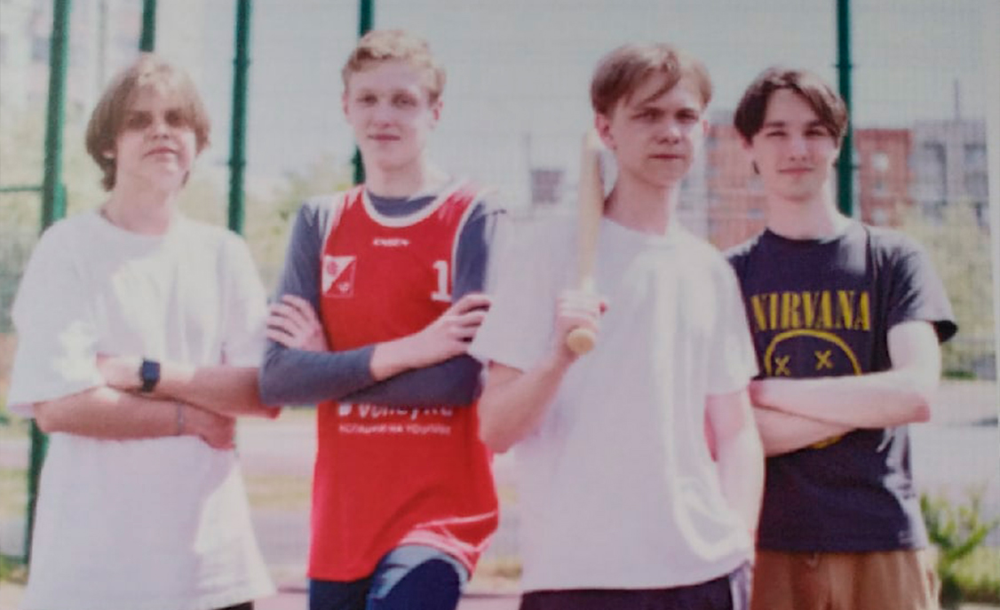

15.03.2024 – Present
Media Engineering:
Nuremberg

Moved to Nuremberg for an Orientation Semester with an intensive focus on Blender and 3D fundamentals.
Since 01.10.2024, I am officially a Media Engineering student at TH Nürnberg, combining tech & art.
01.10.2023 – 15.03.2024
The Pivot:
From Architecture to 3D

Started studying Architecture at OTH Regensburg, then shifted my focus toward 3D and visual design.
I’m most motivated by lighting, composition, and storytelling through visuals.
21.09.2022 – 01.08.2023
The Move to Germany:
Coburg

Moved to Coburg to attend the Studienkolleg (T-Kurs).
Graduated with a final grade of 1.8.
10.08.2004 – 01.04.2022
The Foundation:
Barnaul, Russia

I was born in Barnaul. Here I built my creative discipline:
01.05.2021:
Graduated Art School No. 1 with a perfect 1.0 GPA.
01.04.2022:
Graduated Lyceum 129, also with a 1.0 GPA.